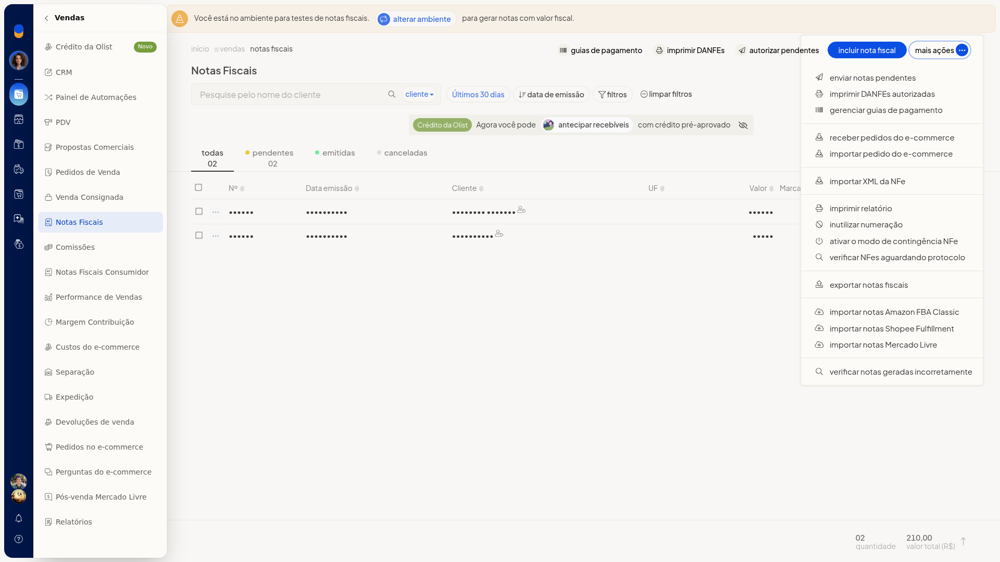
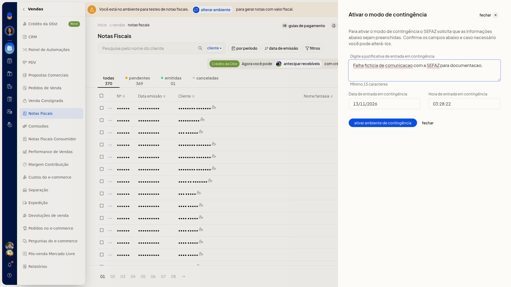

Emissão em contingência
Em Vendas > Notas Fiscais, você abre o modo de contingência da NFe e informa a justificativa antes de ativar o ambiente.
Importante
- A justificativa precisa ter no mínimo 15 caracteres.
- A data e a hora já vêm preenchidas.
Instruções
-
Acesse Vendas > Notas Fiscais.
-
Abra Mais ações e escolha Ativar o modo de contingência NFe.

-
Preencha a justificativa.

-
Clique em ativar ambiente de contingência. Para sair sem ativar, clique em fechar.